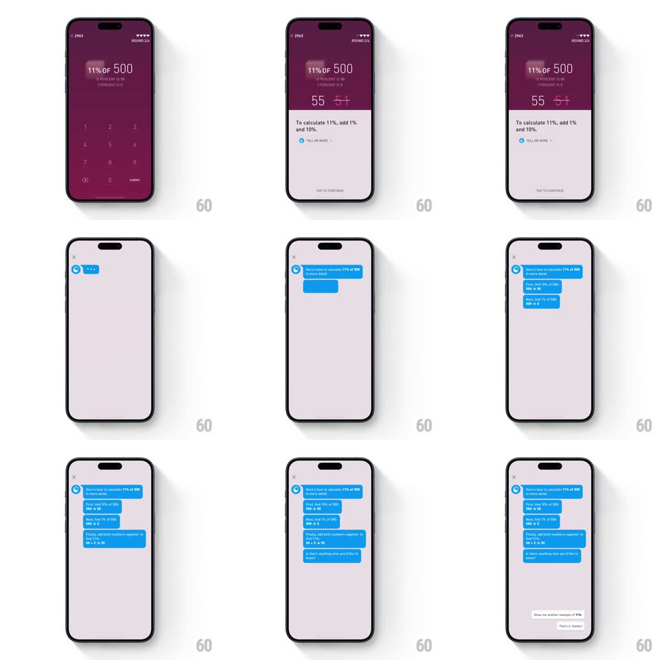

Media
Frame-by-frame

Rebuild this interaction 1:1: Elevate's explain flow - "TELL ME MORE" on a math question lifts a hint sheet ("To calculate 11%, add 1% and 10%"), and continuing expands it into a full-screen chat where blue assistant bubbles walk through the solution one message at a time with typing indicators.

Rebuild this interaction 1:1: Elevate's explain flow - "TELL ME MORE" on a math question lifts a hint sheet ("To calculate 11%, add 1% and 10%"), and continuing expands it into a full-screen chat where blue assistant bubbles walk through the solution one message at a time with typing indicators.
## Integration
Integration: stack-agnostic spec - springs given as stiffness/damping, timed motions as duration + curve; map every value to your framework and animation library of choice.
## Scene
Plum math screen ("11% OF 500", keypad, entered answer "55"); a pale sheet slides up with the hint line and a "TELL ME MORE" row; then a full-screen lavender chat: assistant avatar, stacked blue bubbles ("First, find 10% of 500: 500 -> 50", "Next, find 1% of 500...", "Finally, add both numbers..."), a typing bubble, and quick-reply chips at the bottom ("Show me another example of 11%", "That's it, thanks!").
## Motion spec
Pattern: sheet-to-conversation expansion with typed pacing.
- The hint sheet rises over the dimmed question (spring ~320/24).
- Expanding: the sheet's top edge grows to full screen (400ms, ease-out), the question content scrolling out above; the sheet's surface becomes the chat background - one continuous morph.
- Messages arrive one at a time: a typing bubble (three dots bouncing, 900ms) first for ~800ms, then the real bubble scales up from its tail corner (spring ~380/20) while previous bubbles shift up; 600ms pause between messages.
- Quick-reply chips slide up last (staggered 100ms) once the explanation completes.
## Calibration
- The chat types at reading pace - fast enough to not bore, slow enough to teach.
- Assistant bubbles are blue-on-lavender with tails; there is no user message until a chip is tapped.
## Reduced motion
All messages fade in together; no typing dots.
## Don't miss
- The typing indicator must precede EVERY substantive bubble - that rhythm is the personality.
- The morph never flashes a blank screen between sheet and chat.